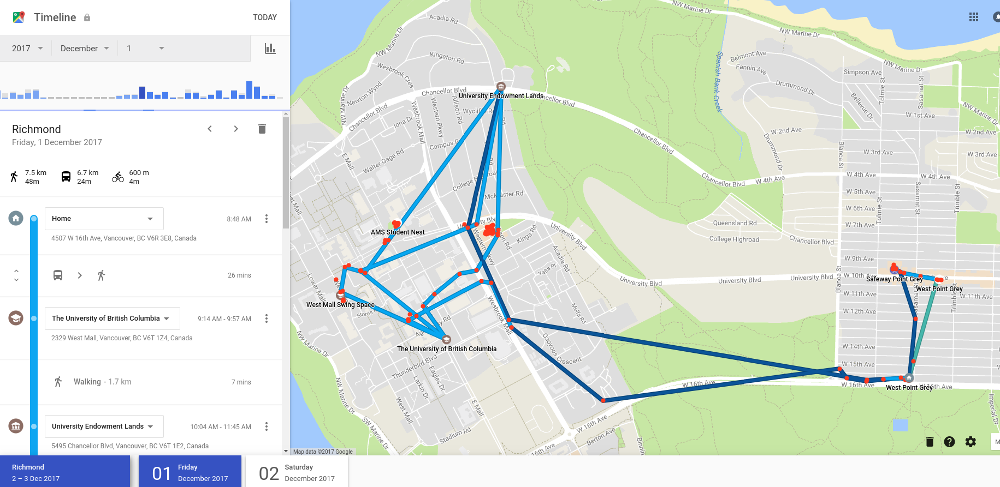

A Commuter's Travel Habits
Preface
Why am I documenting this? While mainly for my own use, I'm also documenting my project process for anyone who's interested in viewing my thought process while I'm learning.
Motivation and Goals
For the first couple months of the school, I've been commuting to and from UBC by bike. Then it started raining. And then it started getting cold. That made me wonder - how does the weather affect my travel patterns? What about my travel time to school?
What do I want out of this?
- To learn the fundamental of web development, i.e. HTML, CSS, Javascript. Specifically, I want to be able create design that doesn't look like complete garbage, and I also be able to utilize open-source Javascript libraries.
- To be able to grasp a basic understanding of statistics and data analytics. I haven't had a class on stats yet so this would be a good start.
Coming from a Computer Engineering background, I'm more familiar with low level programming languages as well as hardware description languages so I think would be nice to learn a little bit about design and some high level programming languages such as JavaScript.
Functionality
What do I think about when I use a web app? I have absolutely no design background, but here's what I look for as a user:
- Is the page easy to navigate and easy to use? Are there any unnecessary bells and whistles that might be confusing?
- Is the page visually appealing? Layout, color scheme, choice of images, etc. all tie in to this.
- Functionality - is the app even useful/does it have any cool features that might be unique or fun to use?
- Performance - does the application run for a reasonable amount of time for what it's specific functionality?
Taking all this in mind, I've been able to come up with a list of requirements that my website might need. Of course, while developing the application, there's bound to be specifications that need rethinking; after all, that's what the design process is all about.
Desired Features:
- A map that shows my route to school, and which classrooms I stay in the most during an average school day. Ideally it would be a heatmap, showing which route I like to take the most
- A graph showing the distance I travelled each day by bike, by walking, and by bus. Another graph showing cumulative distance would also be nice.
- A graph with temperatures and precipitation against time. I also want to be able to see to what extent temperature and rain affects my travel patterns.
Of course, this list is going to grow and will modified constantly, seeing as I don't really know the uses and limitations of Javascript
Implementation
Data Acquisition
Firstly, I needed to have a method to collect data about my travel habits, as well as the weather. Since I have an Android, I enabled Google Timelines to track my location. Just by looking at the raw data from Google Timeline (shown below), it doesn't seem to be too bad. The update rate seems to be about once every few minutes - which isnt exactly ideal for short journeys, but it does the job. Weather data was easy enough to find; as it turns out, the government provides daily historical data for free, in a CSV format.

Data Processing
After sifting through the JSON data that Google data provided, it turned out to be quite difficult to parse and use for the Google Maps API. Ater some digging around on the web, I found a website that takes Timeline data and creates a heatmap.. Amazingly, they're open source, and provide the code on Github! So why reinvent the wheel?
Resources and References
Being my first time using HTML, CSS, and Javascript, I've had to gather knowledge from a variety of different sources. Of course, StackOverflow was used regularly. Heres some other resources that I used in this project:
- Google Maps API Documentation - I think it's pretty important for any Software Developer (and Engineer!) to understand documentation written by others. I used this pretty extensively.
- W3Schools - A pretty great resource for learning about web development. I also used FreeCodeCamp for a little while to get used to writing in new languages.